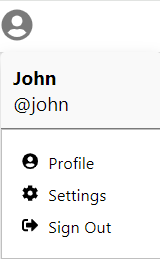
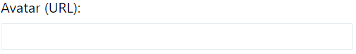
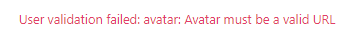
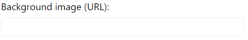
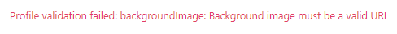

Twitter-Clone
Twitter-Clone is a social media platform where the user can share his thoughts and opinion by tweeting. Users can see others’ tweets and discuss with them diverse topics, news and opinions through likes and replies.
Specifications
To begin with, I familiarized myself with Twitter-Clone by exploring its functionalities. I then wrote down a specification of its features, in order to provide me with a guide for writing test cases. Here are the Twitter-Clone specifications:
Twitter-Clone specifications (Click to reveal)
Test cases
Here are the test cases for Twitter-Clone, grouped by feature. They can be executed manually, and will be automated below.
-
Feature: Sign Up
STEP ACTION EXPECTED RESULTS Prereq. The database is empty. There are no users in the database Prereq. Import the data in "twitter clone test data/1- SIGN UP" in mongoDb.
(The data contains a user named John with username "john", email "john@gmail.com" and password "Clonejohn23")Prereq. Open Twitter-Clone as an anonymous user 1 Nominal case: The user creates an account by signing up 1.1 Both The "Sign-in" and "Sign Up" button are present in the navigation bar 1.2 The user clicks on the "Sign Up" button 1.3 The user fills the "Sign Up" form:
- Name: Rony
- Username: rony
- email: rony@gmail.com
- Password: Clonerony23
- Confirm password: Clonerony231.4 The user clicks the "Sign Up" submit button The user's account is created
The user is automatically signed in
The user is taken to "Home" page
The Sign Up button in the navigation bar disappears2 Nominal case: The user must create an account with a unique username 2.1 The user clicks on the "Sign Up" button 2.2 The user fills the "Sign Up" form:
- Name: Jhonny
- Username: john
- email: jhonny@gmail.com
- Password: Clonejhonny23
- Confirm password: Clonejhonny232.3 The user clicks the "Sign Up" submit button A red sentence appears: "Username already taken" 3 Nominal case: The user must create an account with a unique email 3.1 The user clicks on the "Sign Up" button 3.2 The user fills the "Sign Up" form:
- Name: Jhonny
- Username: johnny
- email: john@gmail.com
- Password: Clonejhonny23
- Confirm password: Clonejhonny233.3 The user clicks the "Sign Up" submit button A red sentence appears: "Email already taken" 4 Nominal case: Multiple users can have the same name 4.1 The user clicks on the "Sign Up" button 4.2 The user fills the "Sign Up" form:
- Name: Jhon
- Username: johnny
- email: jhonny@gmail.com
- Password: Clonejhonny23
- Confirm password: Clonejhonny234.3 The user clicks the "Sign Up" submit button "The user's account is created
The user is automatically signed in
The user is taken to "Home" page
The Sign Up button in the navigation bar disappears5 Nominal case: The user writes the email wrong
(The email must be a string in the form "name@example.com")5.1 The user clicks on the "Sign Up" button 5.2 The user fills the "Sign Up" form:
- Name: Jhon
- Username: johnny
- email: jhonny#1gmail.com
- Password: Clonejhonny23
- Confirm password: Clonejhonny235.3 The user clicks the "Sign Up" submit button An alert appears saying: "Please include an '@' in the email address. 'jhonny#1gmail.com' is missing an '@' 5.4 The user writes the email wrong again: "jhonny#1@gmail" and clicks the "Sign Up" submit button A red sentence appears: "email" must be a valid email 6 Edge case: The user forgot to write his email 6.1 The user clicks on the "Sign Up" button 6.2 The user fills the "Sign Up" form:
- Name: Jhonny
- Username: johnny
- email: (empty)
- Password: Clonejhonny23
- Confirm password: Clonejhonny236.3 The user clicks the "Sign Up" submit button A red sentence appears: email is required 7 Nominal case: The user writes a password that is not secured 7.1 The user clicks on the "Sign Up" button 7.2 The user fills the "Sign Up" form:
- Name: Jhonny
- Username: johnny
- email: jhonny@gmail.com
- Password: jhonny
- Confirm password: jhonny7.3 The user clicks the "Sign Up" submit button A red sentence appears: password must be at least 8 characters 7.4 The user writes the password: Clonejhonny (of course with the "confirm password" being the same)
and clicks the "Sign Up" submit buttonA red sentence appears: password must contain at least 1 letter and 1 number 7.5 The user writes the password: Clonejhonny23 (of course with the "confirm password" being the same)
and clicks the "Sign Up" submit buttonThe user's account is created
The user is automatically signed in
The user is taken to "Home" page
The Sign Up button in the navigation bar disappears8 Nominal case: The user does not confirm his password right 8.1 The user clicks on the "Sign Up" button 8.2 The user fills the "Sign Up" form:
- Name: Jhonny
- Username: johnny
- email: jhonny@gmail.com
- Password: Clonejhonny23
- Confirm password: Clonejhonny28.3 The user clicks the "Sign Up" submit button 2 same red sentences appears: password must match 9 Edge case: The user submits the Sign Up form with both password and confirmation password being empty 9.1 The user clicks on the "Sign Up" button 9.2 The user fills the "Sign Up" form:
- Name: Jhonny
- Username: johnny
- email: jhonny@gmail.com
- Password:
- Confirm password:9.3 The user clicks the "Sign Up" submit button 2 red sentences appears:
(1) password is required
(2) confirmation password is required10 Nominal case: Username is a string which can only accept 3 special characters: period, dash and underscore
(Any other special characters are not allowed)10.1 The user clicks on the "Sign Up" button 10.2 The user fills the "Sign Up" form:
- Name: Jhonny
- Username: johnny.-_#
- email: jhonny@gmail.com
- Password: Clonejohnny23
- Confirm password: Clonejohnny2310.3 The user clicks on the "Sign Up" button A red sentence appears: User validation failed: username: username must only contain numbers, letters, ".", "-", "_" 10.4 The user write username as: johnny.-_ 10.5 The user clicks on the "Sign Up" button The user's account is created
The user is automatically signed in
The user is taken to "Home" page
The Sign Up button in the navigation bar disappears11 Nominal case: The user can go to the "Sign In" form from the "Sign Up" page 11.1 The user clicks on the "Sign Up" button 11.2 The user clicks on the "Sign in now" link The user is sent automatically to the Sign In page -
Feature: Sign In
STEP ACTION EXPECTED RESULTS Prereq. The database is empty. There are no users in the database Prereq. Import the data in "twitter clone test data/2- SIN IN" in mongoDb
(The data contains a user named John with username "john", email "john@gmail.com" and password "Clonejohn23")Prereq. Open Twitter-Clone as an anonymous user 1 Nominal case: The user signs in by typing the username 1.1 The "Sign in" button is present in the navigation bar 1.2 The user clicks on the "Sign in" button 1.3 The user fills the "Sign in" form:
- Username: john
- Password: Clonejohn231.4 The user clicks the "Log In" submit button The user enters his account (the user is signed-in)
The user is taken to the “Home” page
The “Sign In” button in the navigation bar disappears (Only anonymous user can see the “Sign In” button in the navigation bar)2 Nominal case: The user signs in by typing the email 2.1 The user enters the "Sign In" page and fills the "Sign in" form:
- Email: john@gmail.com
- Password: Clonejohn232.2 The user clicks the "Log In" submit button The user enters his account (the user is signed-in)
The user is taken to the “Home” page
The “Sign In” button in the navigation bar disappears (Only anonymous user can see the “Sign In” button in the navigation bar)3 Nominal case: The user signs in by typing the username or email wrong 3.1 The user enters the "Sign In" page and fills the "Sign in" form:
- Username or email: joh
- Password: Clonejohn233.2 The user click the "Log In" submit button A red sentence appears: "Invalid login credentials" 4 Nominal case: The user signs in by typing the password wrong 4.1 The user enters the "Sign In" page and fills the "Sign in" form:
- Username: john
- Password: Clonejohn24.2 The user click the "Log In" submit button A red sentence appears: "Invalid login credentials" 5 Edge case: The user signs in by keeping the username or email empty 5.1 The user enters the "Sign In" page and fills the "Sign in" form:
- Username or email: (empty)
- Password: Clonejohn235.2 The user click the "Log In" submit button A red sentence appears: "Username is required" 6 Edge case: The user signs in by keeping the password empty 6.1 The user enters the "Sign In" page and fills the "Sign in" form:
- Username or email: John
- Password: (empty)6.2 The user click the "Log In" submit button A red sentence appears: "Password is required" 7 Edge case: The user signs in by keeping both the username or email and password empty 7.1 The user enters the "Sign In" page and does not fill the "Sign in" form 7.2 The user clicks the "Log In" submit button 2 red sentences appears: "Username is required" and "Password is required" 8 Nominal case: The user can go to the "Sign Up" page from the "Sign In" page 8.1 The user enters the "Sign In" page 8.2 The user clicks on the "Sign up now" link The user is sent to the "Sign Up" page -
Feature: Tweet
STEP ACTION EXPECTED RESULTS Prereq. The database is empty. There are no users in the database Prereq. Import the data in "twitter clone test data/3- TWEET" in mongoDb
The data contains the users:
1- Name: John (username: john; email: john@gmail.com; password: Clonejohn23)
2- Name: Paul (username: paul; email: paul@gmail.com; password: Clonepaul23)
3- Name: Rony (username: rony; email: rony@gmail.com; password: Clonerony23)Prereq. Open Twitter-Clone as an anonymous user Prereq. The user sign in as John 1 Nominal case: The user creates a tweet 1.1 The user clicks on the "Tweet" button in the navigation bar A tweet modal appears
The text box has the placeholder “What’s happening?”
The tweet submit button is disabled since the text box is empty1.2 The user types in the text box: "Hello everyone" The tweet submit button is active since the text box is no longer empty 1.3 The user clicks on the tweet submit button The tweet appears in the "Home" page
The tweet is displayed with:
Name and username of the author
The tweet date publication
The text
Reply button
Like button1.4 The user clicks on his personal menu and opens "profile" The user sees the tweet done in step 1.2 in the tweet section 2 Nominal case: The user cannot write a tweet with more than 280 characters 2.1 The user John tweet with 283 characters: "Hello everyone. Today is a very beautiful morning.
My breakfeast consisted of eggs and bacons and pancakes with syrup and a big glass of lemonade.
I looked outside the window, the nature was green and clean, the sky was blue, there was no
annoying car noises anywhere. I want to stay"The tweet button is disabled 2.2 The user John removes the last 2 letters in the tweet "a" and "y" and the tweet have 281 characters The tweet button is still disabled 2.3 The user John removes the last letter "t" in the tweet and the tweet will have 280 characters The tweet button is active 2.4 The user John clicks the tweet submit button The tweet "Hello everyone. Today is a very beautiful morning. My breakfeast consisted of
eggs and bacons and pancakes with syrup and a big glass of lemonade. I looked outside the window,
the nature was green and clean, the sky was blue, there was no annoying car noises anywhere.
I want to s"
Thus the tweet can have a maximum of 280 characters3 Nominal case: The user deletes his own tweet 3.1 The user clicks on the "Tweet" button in the navigation bar 3.2 The user types in the text box: "Hello everyone" 3.3 The user clicks on the tweet submit button 3.4 The user deletes his own tweet by clicking on the "X" button The tweet disappears from the "Home" page 3.5 The user clicks on his personal menu and opens "profile" The tweet deleted is no longer in the tweet section 4 Nominal case: The user cancels the tweet 4.1 The user clicks on the "Tweet" button in the navigation bar 4.2 The user types in the text box: "Hello everyone" 4.3 The user clicks on the "X" button in order to close the tweet The tweet modal disappears
The tweet was not created. The "Home" page stays empty5 Nominal case: The user replies to a tweet 5.1 The user John tweet: "Hello everyone" 5.2 The user John signs out 5.3 The user Rony signs in John's tweet appears on the "Home" page.
The number next to the bubble (reply button) is zero5.4 The user Rony clicks on reply button situated in John's tweet A reply modal appears 5.5 The user Rony writes a reply: "Hello John" and press Enter A new reply "Hello john" appears under the tweet in the reply modal with the properties:
- Name: Rony
- username: @rony
- The day it was published
- Reply button (The number next to the reply button related to the tweet is 1)
- Like button is still zero5.6 The user Rony exit the reply modal The number next to the bubble (reply button) related to the tweet is now 1 5.7 The user Rony signs out 5.8 The user John signs in The user John can see that his tweet "Hello everyone" in the "Home" page, has a number 1 next to the reply button 5.9 The user John clicks on the tweet "Hello everyone" The user John can see Rony's reply to his tweet in the reply modal, with the number 1 next to the reply button 5.10 The user John exit the reply modal and go to his profile The user John can see that his tweet "Hello everyone" in the tweet section of his profile, has a number 1 next to the reply button 5.11 The user John clicks on the tweet "Hello everyone" The user John can see Rony's reply to his tweet in the reply modal, with the number 1 next to the reply button 6 Nominal case: The user likes a tweet 6.1 The user John tweet: "Hello everyone" 6.2 The user John signs out 6.3 The user Rony signs in The user Rony can see that in John's tweet:
The number next to the heart (like button) is zero
The heart is transparent6.4 The user Rony clicks on the like button The number next to the like button increases by one
The number is now 1
The heart is red6.5 The user Rony clicks on the tweet "Hello everyone" The user Rony can see on the reply modal that the number next to the like button is 1 and that the heart is red 6.6 The user Rony exit the reply modal, go to his profile and click on the likes section The user Rony can see the tweet he liked
The user Rony can see that the number next to the like button is 1 and that the heart is red6.7 The user Rony signs out 6.8 The user John signs in The user John can see his tweet liked
The number next to the like button is 1
The heart is transparent (the color red is for the user who made the like action)7 Nominal case: The user can remove his like 7.1 The user John tweet: "Hello everyone" 7.2 The user John signs out 7.3 The user Rony signs in The number next to the like button is zero
The heart is transparent7.4 The user Rony likes John's tweet The number next to the like button is 1
The heart is red7.5 The user Rony likes the same tweet again the number next to the like button is zero
The heart is transparent8 Nominal case: Multiple users can like the same tweet 8.1 The user John tweet: "Hello everyone" 8.2 The user John signs out 8.3 The user Rony signs in 8.4 The user Rony selects john's tweet and likes it The number next to the like button is 1
The heart is red8.5 The user Rony signs out 8.6 The user Paul signs in 8.7 The user Paul selects john's tweet and likes it The number next to the like button is 2
This number shows the number of users liking the tweet9 Nominal case: Multiple users can reply to the same tweet 9.1 The user John tweet: "Hello everyone" 9.2 The user John signs out 9.3 The user Rony signs in 9.4 The user Rony replies to John's tweet: "Hello John" and then exit the reply modal The number next to the bubble (reply button) increases by one.
The number is now 19.5 The user Rony signs out 9.6 The user Paul signs in 9.7 The user Paul replies to John's tweet "Good morning John" The replies are sorted from newest (top) to oldest (bottom) 9.8 The user Paul exit the reply modal The number next to the bubble increases by one.
The number is now 210 Nominal case: The user can delete only his own tweets and replies 10.1 The user John tweet: "Hello everyone" 10.2 The user John signs out 10.3 The user Rony signs in 10.4 The user Rony replies to john'tweet "Hello John" and exit the reply modal The number next to the bubble increases by one.
The number is now 110.5 The user Rony signs out 10.6 The user Paul signs in 10.7 The user Paul replies to John'tweet "Good morning John" and exit the reply modal The number next to the bubble increases by one.
The number is now 210.8 The user Paul tries to delete John's tweet Since there is no "X" button on John's tweet, John's tweet cannot be deleted by Paul 10.9 The user Paul clicks on the tweet "Hello everyone" and tries to delete Rony's reply "Hello John" Since there is no "X" button on Rony's reply, Rony's reply cannot be deleted 10.10 The user Paul deletes his reply "Good morning John" 10.11 The user Paul exit the reply modal The number next to the reply button is now 1 11 Edge case: The user reply to the same tweet more than once 11.1 The user John tweet: "Hello everyone" 11.2 The user John signs out 11.3 The user Rony signs in 11.4 The user Rony selects john's tweet and replies to it: "Hello John" 11.5 The user Rony replies again to the tweet: "I will see you tomorrow" 11.6 The user Rony exit the reply modal The number next to the bubble (reply button) is now 2 -
Feature: Home page
STEP ACTION EXPECTED RESULTS Prereq. The database is empty. There are no users in the database Prereq. Import the data in "twitter clone test data/4- VISIT HOME PAGE" in mongoDb
The data contains the user John (Username: john; email: john@gmail.com; password: Clonejohn23)
There are 30 tweets done by John:
Task1 was accomplished
Task2 was accomplished
Task3 was accomplished
Task4 was accomplished
Task5 was accomplished
Task6 was accomplished
Task7 was accomplished
Task8 was accomplished
Task9 was accomplished
Task10 was accomplished
Task11 was accomplished
Task12 was accomplished
Task13 was accomplished
Task14 was accomplished
Task15 was accomplished
Task16 was accomplished
Task17 was accomplished
Task18 was accomplished
Task19 was accomplished
Task20 was accomplished
Task21 was accomplished
Task22 was accomplished
Task23 was accomplished
Task24 was accomplished
Task25 was accomplished
Task26 was accomplished
Task27 was accomplished
Task28 was accomplished
Task29 was accomplished
Task30 was accomplishedPrereq. Open Twitter-Clone and sign in as John 1 Nominal case: The user can see all 30 tweets, which are ordered from newest (Top) to oldest (bottom) 1.1 The user is already in the "Home" page The user can see all the tweets ordered from newest (Top) to oldest (bottom) 1.2 The user go to his profile The user can see all the tweets ordered from newest (Top) to oldest (bottom) -
Feature: All profiles
STEP ACTION EXPECTED RESULTS Prereq. The database is empty. There are no users in the database Prereq. Import the data in "twitter clone test data/5- VISIT ALL PROFILES" in mongoDb
The data contains the users:
(1) Name: John (username: john; email: john@gmail.com; password: Clonejohn23)
(2) Name: Paul (username: paul; email: paul@gmail.com; password: Clonepaul23)
(3) Name: Rony (username: rony; email: rony@gmail.com; password: Clonerony23)
(4) Name: Kevin (username: kevin; email: kevin@gmail.com; password: Clonekevin23)
(5) Name: Julia (username: julia; email: julia@gmail.com; password: Clonejulia23)Prereq. Open Twitter-Clone as an anonymous user 1 Nominal case: An anonymous user can see the profiles in "All profiles" page 1.1 An anonymous user clicks on "All profiles" button in the navigation bar There are 5 users displayed with their name and username, and they are sorted from oldest member to newest member (left to right; top to bottom)
John @john
Paul @paul
Rony @rony
Kevin @kevin
Julia @julia2 Nominal case: An anonymous user can access a user's profile through "All profiles" page 2.1 An anonymous user clicks on "All profiles" button in the navigation bar 2.2 An anonymous user clicks on the link related to the profile of Paul An anonymous user is in the profile of Paul 3 Nominal case: The logged-in user can see the profiles in "All profiles" page 3.1 The user signs in as John 3.2 The user clicks on "All profiles" button in the navigation bar There are 5 users displayed with their name and username, and they are sorted from oldest member to newest member (left to right; top to bottom)
John @john
Paul @paul
Rony @rony
Kevin @kevin
Julia @julia4 Nominal case: The logged-in user can access a user's profile 4.1 The user signs in as John 4.2 The user clicks on "All profiles" button in the navigation bar 4.3 The user clicks on the link related to the profile of Paul The user is in the profile of Paul -
Feature: Anonymous user restrictions with tweets
STEP ACTION EXPECTED RESULTS Prereq. The database is empty. There are no users in the database Prereq. Import the data in "twitter clone test data/6- 6- ANONYMOUS USER RESTRICTIONS WITH THE TWEETS" in mongoDb
The data contains: the user John (username: john; email: john@gmail.com; password: Clonejohn23)
The data contains also the tweet made by John: "Hello everyone"Prereq. Open Twitter-Clone as an anonymous user 1 Nominal case: An anonymous user cannot delete the tweet in the "Home" page 1.1 In the "Home" page, The "X" button which deletes the tweet "Hello everyone", is not present on the tweet 2 Nominal case: An anonymous user cannot delete the tweet in the tweet section of the user's profile 2.1 An anonymous user clicks on the "All profiles" button 2.2 An anonymous user clicks on the profile link related to John In the John's profile, The "X" button which deletes the tweet "Hello everyone", is not present on the tweet 3 Nominal case: An anonymous user cannot reply to a tweet in the "Home" page 3.1 An anonymous user clicks on the tweet 3.2 An anonymous user clicks on the text box, type "Hello" and click Enter The anonymous user is automatically sent to the "Sign In" page 4 Nominal case: An anonymous user cannot like a tweet in the "Home" page 4.1 An anonymous user clicks on the like button of the tweet The anonymous user is automatically sent to the "Sign In" page 4.2 An anonymous user returns to "Home" page The tweet "Hello everyone" has not been liked
The number next to the like button is zero
The heart is transparent5 Nominal case: An anonymous user cannot reply to a tweet in the tweet section of the user's profile 5.1 An anonymous user clicks on the "All profiles" button 5.2 An anonymous user clicks on the profile link related to John 5.3 An anonymous user clicks on the tweet 5.4 An anonymous user clicks on the text box, type "Hello" and click Enter The anonymous user is automatically sent to the "Sign In" page 6 Nominal case: An anonymous user cannot like a tweet in the tweet section of the user's profile 6.1 An anonymous user clicks on the "All profiles" button 6.2 An anonymous user clicks on the profile link related to John 6.3 An anonymous user clicks on the like button of the tweet The anonymous user is automatically sent to the "Sign In" page 7 Nominal case: An anonymous user cannot tweet 7.1 The tweet button is not present in the navigation bar 7.2 The user John signs in The tweet button is visible in the navigation bar -
Feature: User personal menu
STEP ACTION EXPECTED RESULTS Prereq. The database is empty. There are no users in the database Prereq. Import the data in "twitter clone test data/7- USER'S PERSONAL MENU" in mongoDb
The user contains the user John (username: john; email: john@gmail.com; password: Clonejohn23)Prereq. Open Twitter-Clone as an anonymous user Prereq. The user signs in as John 1 Nominal case: The personal menu asserts in which account the user is 1.1 The user clicks on the personal menu in the navigation bar In the personal menu, the user can see (1) the name "John" and (2) @ + username "john" 2 Nominal case: The user can go to his profile through his personal menu 2.1 The user clicks on the personal menu in the navigation bar 2.2 The user clicks on "Profile" The user enter his profile 3 Nominal case: The user can go to the "Edit profile" page through the personal menu 3.1 The user clicks on the personal menu in the navigation bar 3.2 The user clicks on "Settings" The user is sent to the Setting page 3.3 The user clicks on the "Edit profile" button The user is sent to the "Edit profile page" 4 Nominal case: The user can delete his account 4.1 The user clicks on the personal menu in the navigation bar 4.2 The user clicks on "Settings" 4.3 The user clicks on "Delete account" button 4.4 The user clicks "Yes, delete" button The user is automatically signed out
The "Sign In" page opens4.5 The user signs in as John A red sentence appears: "Invalid login credentials" 5 Edge case: The user can cancel the deletion of his account 5.1 The user clicks on the personal menu in the navigation bar 5.2 The user clicks on "Settings" 5.3 The user clicks on "Delete account" button 5.4 The user clicks "Nethermind, don't delete." button The user is returned to settings page
The account is not deleted
The user is still signed in6 Nominal case: The user can sign out 6.1 The user clicks on the personal menu in the navigation bar 6.2 The user clicks on 'Sign Out" button The user is now anonymous
Both the "Sign In" and "Sign Up" buttons appears in the navigation bar
The user's personal menu disappears in the navigation bar
The tweet button disappears in the navigation bar -
Feature: User's profile
STEP ACTION EXPECTED RESULTS Prereq. The database is empty. There are no users in the database Prereq. Import the data in "twitter clone test data/8- USER'S PROFILE" in mongoDb
The data contains:
(1) User John (username: john; email: john@gmail.com; password: Clonejohn23)
(2) User Rony (username: rony; email: rony@gmail.com; password: Clonerony23)
(3) User Paul (username: paul; email: paul@gmail.com; password: Clonepaul23)
The data contains 5 tweets made by John:
1- Good morning everyone
2- I hope you are all doing well
3- I am going to work now
4- Meet me all at the office
5- We finish work early today at noonPrereq. Open Twitter-Clone and sign in as John 1 Nominal case: The user enters a profile 1.1 The user clicks on "All profiles" button in the navigation bar 1.2 The user clicks on John's profile (John @john) John's profile is displayed
We see in John's profile:
Name: John
@+ Username: @john
Joined December 20231.3 The user clicks on "All profiles" button in the navigation bar 1.4 The user clicks on Rony's profile (Rony @rony) Rony's profile is displayed
We see in Rony's profile:
Name: Rony
@+ Username: @rony
Joined December 20232 Nominal case: The user can enter the "Edit profile" form, only from his own profile (Only a user can modify his own profile) 2.1 The user clicks on "All profiles" button in the navigation bar 2.2 The user clicks on John's profile (John @john) 2.3 The user clicks on the "Edit profile" button The user in the "Edit profile" form 2.4 The user clicks on "All profiles" button in the navigation bar 2.5 The user clicks on Rony's profile (Rony @rony) The user enters Rony's profile but "Edit profile" button is not present 3 Nominal case: The user can see the tweets in the tweet section of the user's profile 3.1 The user clicks on "All profiles" button in the navigation bar 3.2 The user clicks on John's profile (John @john) The user sees 5 tweets in the tweet section
The tweets are sorted from newest (Top) to oldest (Bottom)
- We finish work early today at noon
- Meet me all at the office
- I am going to work now
- I hope you are all doing well
- Good morning everyone3.3 The user clicks on "All profiles" button in the navigation bar 3.4 The user clicks on Rony's profile (Rony @rony) The tweet section is empty since Rony didn't tweet
There is a sentence: There are no tweets to display4 Nominal case: The user can see the likes in the like section of the user's profile 4.1 The user clicks on "All profiles" button in the navigation bar 4.2 The user clicks on John's profile (John @john) 4.3 The user enters the likes section There are no tweets displayed since John didn't like any tweet
There is the sentence: There are no tweets to display4.4 The user John signs out 4.5 The user Rony Signs In 4.6 The user Rony clicks "Home" in the navigation bar and like the following tweets:
- I hope you are all doing well
- We finish work early today at noon4.7 The user Rony clicks on "All profiles" button in the navigation bar 4.8 The user clicks on Rony's profile (Rony @rony) and enter the likes section The 2 tweets liked apppears from newest (Top) to oldest (Bottom) 5 Edge case: The tweets in the likes section are sorted depending on when they were created, not when they were liked 5.1 The user clicks "Home" in the navigation bar 5.2 The user likes all his 5 tweets form oldest (bottom) to newest (top) 5.3 The user clicks on "All profiles" button in the navigation bar 5.4 The user clicks on John's profile (John @john) 5.5 The user enters the likes section All 5 tweets are all present in the likes section from newest (Top) to oldest (Bottom)
- We finish work early today at noon
- Meet me all at the office
- I am going to work now
- I hope you are all doing well
- Good morning everyone
NB: The tweets are sorted depending on when they were created, NOT when they were liked -
Feature: Edit profile
STEP ACTION EXPECTED RESULTS Prereq. The database is empty. There are no users in the database Prereq. Import the data in "twitter clone test data/9- EDIT PROFILE" in mongoDb
The data contains:
(1) User John (username: john; email: john@gmail.com; password: Clonejohn23)
(2) User Johnny (username: johnny; email: johnny@gmail.com; password: Clonejohnny23)Prereq. Open Twitter-Clone and sign in as John 1 Nominal case: The user can change his name 1.1 The user clicks on his personal menu located in the navigation bar 1.2 The user enters his profile The user's profile has name "John" and username "@john" 1.3 The user clicks on "edit profile" button 1.4 The user changes his name from "John" to "Rony" 1.5 The user clicks on "Update profile" button A green sentence appears "Profile successfully updated!" 1.6 The user Clicks on "Go back" button The user is in his profile
The name of his profile changed to "Rony"1.7 The user clicks on "All profiles" in the navigation bar The name of the profile with username "@john" has also changed to "Rony" 1.8 The user clicks on "Home" The name on the tweet "Hello" has also changed to "Rony" 1.9 The user clicks on personal menu The name is updated to "Rony" 2 Edge case: The user can change his name and have the same name as another user 2.1 The user clicks on his personal menu located in the navigation bar 2.2 The user enters his profile 2.3 The user clicks on "edit profile" button 2.4 The user changes his name from "John" to "Johnny" 2.5 The user clicks on "Update profile" button A green sentence appears "Profile successfully updated!"
Note: Since there is already another user named "Johnny", thus multiple users can have the same name2.6 The user Clicks on "Go back" button The user is in his profile
The name of his profile changed to "Johnny"3 Edge case: The user cannot leave the name empty 3.1 The user clicks on his personal menu located in the navigation bar 3.2 The user enters his profile 3.3 The user clicks on "edit profile" button 3.4 The user leaves the name textbox empty The name textbox is empty 3.5 The user clicks on "Update profile" button A red sentence appears: "name" is not allowed to be empty 3.6 The user clicks on "Go back" button The user is in his profile
The name of the profile is still "John"3.7 The user clicks on "edit profile" button The name textbox contains "John" which is the original name 4 Nominal case: The user can change his bio 4.1 The user clicks on his personal menu located in the navigation bar 4.2 The user enters his profile 4.3 The user clicks on "edit profile" button 4.4 The user writes in bio textbox: "Blood type A+ Age 23" 4.5 The user clicks on "Update profile" button A green sentence appears "Profile successfully updated!" 4.6 The user clicks on "Go back" button The user is in his profile
The bio "Blood type A+ Age 23" appears on the profile4.7 The user clicks on "All profiles" in the navigation bar The profile with username "@john" has the bio "Blood type A+ Age 23" 5 Nominal case: The user can change his location 5.1 The user clicks on his personal menu located in the navigation bar 5.2 The user enters his profile 5.3 The user clicks on "edit profile" button 5.4 The user writes in the location textbox: "Boulevard street 10+" 5.5 The user clicks on "Update profile" button A green sentence appears "Profile successfully updated!" 5.6 The user clicks on "Go back" button The user is in his profile
The location "Boulevard street 10+" appears on the profile6 Nominal case: The user can change his website 6.1 The user clicks on his personal menu located in the navigation bar 6.2 The user enters his profile 6.3 The user clicks on "edit profile" button 6.4 The user writes in the website textbox: john.com 6.5 The user clicks on "Update profile" button A green sentence appears "Profile successfully updated!" 6.6 The user clicks on "Go back" button The user is in his profile
The website "john.com" appears on the profile7 Edge case: The user must write a valid URL as his website 7.1 The user clicks on his personal menu located in the navigation bar 7.2 The user enters his profile 7.3 The user clicks on "edit profile" button 7.4 The user writes in the website textbox: john.com 7.5 The user clicks on "Update profile" button A green sentence appears "Profile successfully updated!" 7.6 The user writes in the website textbox: john 7.7 The user clicks on "Update profile" button A red sentence appears: "website" must be a valid url 7.8 The user clicks on "Go back" button The user is in his profile
The website "john.com" appears instead of "john" on the profile8 Edge case: The user cannot leave the website textbox empty after it had contained a URL 8.1 The user clicks on his personal menu located in the navigation bar 8.2 The user enters his profile 8.3 The user clicks on "edit profile" button 8.4 The user writes in the website textbox: john.com 8.5 The user clicks on "Update profile" button A green sentence appears "Profile successfully updated!" 8.6 The user empty the website textbox 8.7 The user clicks on "Update profile" button A red sentence appears: "Profile validation failed: website: Website must be a valid URL" 8.8 The user clicks on "Go back" button The website "john.com" appears in his profile 9 Nominal case: The user can change his avatar 9.1 The user clicks on his personal menu located in the navigation bar 9.2 The user enters his profile 9.3 The user clicks on "edit profile" button 9.4 The user writes in the avatar textbox: "https://picsum.photos/id/237/200/300"
(This URL gives a photo of a black dog)9.5 The user clicks on "Update profile" button A green sentence appears "Profile successfully updated!" 9.6 The user clicks on "Go back" button The user is in his profile
The avatar has a photo of a black dog9.7 The user clicks on "All profiles" in the navigation bar The profile with the username "@john" have a photo of a black dog in the avatar 9.8 The user clicks on "Home" in the navigation bar The tweet has a photo of a black dog in his avatar 9.9 The user's personal menu has a photo of a black dog 10 Edge case: The user can add a valid URL , which doesn't give anything, as the avatar 10.1 The user clicks on his personal menu located in the navigation bar 10.2 The user enters his profile 10.3 The user clicks on "edit profile" button 10.4 The user writes in the avatar textbox: john.com (This URL does not give anything) 10.5 The user clicks on "Update profile" button A green sentence appears "Profile successfully updated!" 10.6 The user clicks on "Go back" button The user is in his profile
There is no new photo for the avatar. It has instead the sentence "John's avatar"10.7 The user clicks on "All profiles" in the navigation bar The profile with the username "@john" do not have a photo in his avatar. It has instead the sentence "John's avatar" 10.8 The user clicks on "Home" in the navigation bar The tweet has no photo in his avatar. It has instead the sentence "User Avatar" 11 Edge case: The user cannot add an invalid URL as the avatar 11.1 The user clicks on his personal menu located in the navigation bar 11.2 The user enters his profile 11.3 The user clicks on "edit profile" button 11.4 The user writes in the avatar textbox: john 11.5 The user clicks on "Update profile" button A red sentence appears: "avatar" must be a valid url 12 Nominal case: The user can change the background image 12.1 The user clicks on his personal menu located in the navigation bar 12.2 The user enters his profile 12.3 The user clicks on "edit profile" button 12.4 The user writes in the background image textbox: https://picsum.photos/id/866/600/400
(This URL gives the photo of moutain with snow)A green sentence appears "Profile successfully updated!" 12.5 The user clicks on "Go back" button The user is in his profile
The background image is now a moutain with snow13 Edge case: The user can add a valid URL , which doesn't give anything, as the background image 13.1 The user clicks on his personal menu located in the navigation bar 13.2 The user enters his profile 13.3 The user clicks on "edit profile" button 13.4 The user writes in the background image textbox: john.com (This URL does not give anything) 13.5 The user clicks on "Update profile" button A green sentence appears "Profile successfully updated!" 13.6 The user clicks on "Go back" button The user is in his profile
There is no background image. There is instead the sentence "John's background"14 Edge case: The user cannot add an invalid URL as the background image 14.1 The user clicks on his personal menu located in the navigation bar 14.2 The user enters his profile 14.3 The user clicks on "edit profile" button 14.4 The user writes in the background image textbox: john 14.5 The user clicks on "Update profile" button A red sentence appears "backgroundImage" must be a valid url 15 Edge case: The user can remove the avatar 15.1 The user clicks on his personal menu located in the navigation bar 15.2 The user enters his profile 15.3 The user clicks on "edit profile" button 15.4 The user writes in the avatar textbox: "https://fastly.picsum.photos/id/237/200/300"
(This URL gives a photo of a black dog)15.5 The user clicks on "Update profile" button 15.6 The user clicks on "Go back" button The user is in his profile
The avatar has a photo of a black dog15.7 The user clicks on "edit profile" button 15.8 The user leaves the avatar textbox empty 15.9 The user clicks on "Update profile" button A green sentence appears "Profile successfully updated!" 16 Edge case: The user cannot leave the background image textbox empty after it has contained a URL 16.1 The user clicks on his personal menu located in the navigation bar 16.2 The user enters his profile 16.3 The user clicks on "edit profile" button 16.4 The user writes in the background image textbox:
https://fastly.picsum.photos/id/866/600/400.jpg?hmac=HJKPGrlmng3jwxdqKDC8rTKTDYbRTP_nuCWsgr6WaFY
(This URL gives the photo of moutain with snow)16.5 The user clicks on "Update profile" button 16.6 The user clicks on "Go back" button The user is in his profile
The background image is now a moutain with snow16.7 The user clicks on "edit profile" button 16.8 The user leaves the background image textbox empty 16.9 The user clicks on "Update profile" button A green sentence appears "Profile successfully updated!"
Text execution (Cypress)
All test cases above where rewritten as automated tests using Cypress. You can find them in my Github repository. Here's a video capture of all test runs.
Test reports
All tests were executed manually and run using Cypress. The
Twitter-Clone application was tested on Chrome (if needed by the
client, they can also be tested in other browsers).
Here's
below, the results of running "npx cypress run --browser chrome".
Using
Cypress and manual tests, I detected a number of bugs in the
Twitter-Clone application. The next section lists those bugs.
Twitter-Clone test reports (Click to reveal)
====================================================================================================
(Run Finished)
Spec Tests Passing Failing Pending Skipped
┌────────────────────────────────────────────────────────────────────────────────────────────────┐
│ √ All_profiles.js 00:16 4 4 - - - │
├────────────────────────────────────────────────────────────────────────────────────────────────┤
│ √ anonymous_user_restrictions_with_tw 00:18 7 7 - - - │
│ eets.js │
├────────────────────────────────────────────────────────────────────────────────────────────────┤
│ × edit_profile.js 02:16 16 12 4 - - │
├────────────────────────────────────────────────────────────────────────────────────────────────┤
│ √ Home_page.js 00:21 1 1 - - - │
├────────────────────────────────────────────────────────────────────────────────────────────────┤
│ √ sign-in.js 00:15 8 8 - - - │
├────────────────────────────────────────────────────────────────────────────────────────────────┤
│ √ sign-up.js 00:33 11 11 - - - │
├────────────────────────────────────────────────────────────────────────────────────────────────┤
│ √ tweet.js 01:00 11 11 - - - │
├────────────────────────────────────────────────────────────────────────────────────────────────┤
│ √ users_personal_menu.js 00:15 6 6 - - - │
├────────────────────────────────────────────────────────────────────────────────────────────────┤
│ √ user_profile.js 00:15 5 5 - - - │
└────────────────────────────────────────────────────────────────────────────────────────────────┘
× 1 of 9 failed (11%) 05:34 69 65 4 - -
🐞 Bug reports
My tests found 4 bugs in the Twitter-Clone app. These bugs can be transferred to the development team for fixing
-
Bug 1: The name in the personal menu does not change automatically after being updated
Summary
When updating the name, the name in the personal menu does not change automaticaly. We need to refresh the page in order for the name to be updated
Steps to reproduce
- Prereq: The database is empty. There are no users in the database
- Prereq: Import the data in "twitter clone test data/9- EDIT PROFILE" in mongoDb.
The data contains:User John (username: john; email: john@gmail.com; password: Clonejohn23) AND User Johnny (username: johnny; email: johnny@gmail.com; password: Clonejohnny23) - The user opens Twitter-Clone and signs in as "John" (username: johnny; email: johnny@gmail.com; password: Clonejohnny23)
- The user John enters his profile and clicks on "Edit profile" button
- The user John changes his name from "John" to "Rony"
- The user clicks on personal menu located in the navigation bar
- The name is still "John"
Actual result 🐞
In the personal menu, the name was not automatically changed to "Rony"
Expected result
The name changed from "John" to "Rony"
-
Bug 2: The user's personal menu does not have an image
Summary
When adding an avatar picture, the personal menu's image is expected to change to the avatar image the user just added
Steps to reproduce
- Prereq: The database is empty. There are no users in the database
- Prereq: Import the data in "twitter clone test data/9- EDIT PROFILE" in mongoDb
The data contains:User John (username: john; email: john@gmail.com; password: Clonejohn23) AND User Johnny (username: johnny; email: johnny@gmail.com; password: Clonejohnny23) - The user opens Twitter-Clone and signs in as "John" (username: johnny; email: johnny@gmail.com; password: Clonejohnny23)
- The user John enters his profile and clicks on "Edit profile" button
- The user John add a link for his avatar's image (for example: "https://picsum.photos/id/237/200/300" (This URL gives an image of a black dog))
- The user clicks on personal menu located in the navigation bar
- The personal menu's image has not changed
Actual result 🐞
There is no image in the personal menu
Expected result
The personal menu's image expected to change to the avatar image the user just added
Notes
An HTML code for the image related to the avatar image update must be added to the personal menu
-
Bug 3: The user cannot remove his avatar image
Summary
When the user adds an image for his avatar, he cannot remove the avatar's image anymore
Steps to reproduce
- Prereq: The database is empty. There are no users in the database
- Prereq: Import the data in "twitter clone test data/9- EDIT PROFILE" in mongoDb
The data contains:User John (username: john; email: john@gmail.com; password: Clonejohn23) AND User Johnny (username: johnny; email: johnny@gmail.com; password: Clonejohnny23) - The user opens Twitter-Clone and signs in as "John" (username: johnny; email: johnny@gmail.com; password: Clonejohnny23)
- The user John enters his profile and clicks on "Edit profile" button
- The user John add a link for his avatar's image (for example: "https://picsum.photos/id/237/200/300" (This URL gives a image of a black dog))
- The user clicks on "Update profile" button
- The user clicks on "Go back" button and sees that his avatar has an image of a black dog
- The user clicks on "Edit profile" button
- The user leaves the avatar textbox empty
- The user clicks on "Update profile" button and automaticaly gets the red sentence: User validation failed: avatar: Avatar must be a valid URL
Actual result 🐞
The user cannot empty the avatar textbox without getting the error red sentence (User validation failed: avatar: Avatar must be a valid URL)

Expected result
The user removed his avatar image
-
Bug 4: The user cannot remove his background image
Summary
When the user adds an image for his background in his profile, he cannot remove the background's image anymore
Steps to reproduce
- Prereq: The database is empty. There are no users in the database
- Prereq: Import the data in "twitter clone test data/9- EDIT PROFILE" in mongoDb
The data contains:User John (username: john; email: john@gmail.com; password: Clonejohn23) AND User Johnny (username: johnny; email: johnny@gmail.com; password: Clonejohnny23) - The user opens Twitter-Clone and signs in as "John" (username: johnny; email: johnny@gmail.com; password: Clonejohnny23)
- The user John enters his profile and clicks on "Edit profile" button
- The user John adds a link for his avatar's image (for example: "https://picsum.photos/id/866/600/400" (This URL gives the photo of moutain with snow))
- The user clicks on "Update profile" button
- The user clicks on "Go back" button and sees that his background has an image of a moutain with snow
- The user clicks on "Edit profile" button
- The user leaves the background image textbox empty
- The user clicks on "Update profile" button and automaticaly gets the red sentence: Profile validation failed: backgroundImage: Background image must be a valid URL
Actual result 🐞
The user cannot empty the background image textbox without getting the error red sentence (Profile validation failed: backgroundImage: Background image must be a valid URL )

Expected result
The user removed his background image